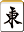
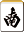
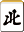
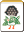
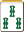
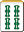
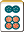
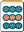
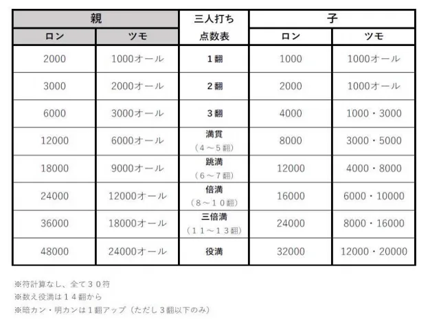

所属プロ・会員・ルール公式ルール・対局マナー・所属プロ・会員制度・プロテスト・慈善活動
公式ルール
麻雀共同体WWの公式ルールは5種類あります。見たいルールを押すと開きます。
四人打ち（スタンダード）
基本ルール
場決め・親決めはサイコロ2度振り
場決めは



を使用して行うこと30000点持ちの30000点返し
子の7700・親の11600は切り上げ満貫
順位点10-30（同点の場合は順位点を均分する）
一発・裏ドラ・カンドラ・カン裏あり
赤ドラなし
カンドラは先めくり
王牌は常に14枚残し
途中流局は一切なし
連風牌の雀頭は2符
クイタンあり・後付けあり
食い替えはできない
フリテンリーチあり・フリテンツモあり
自身の手番がハイテイでなければリーチをかけることができる
リーチ後に牌組みの変化しない暗カンは自由
ただし、待ちの牌姿が変わる場合は暗カンできない
例）





での暗カンは待ちの牌姿間がなくなるのでできない
ダブロン・トリプルロンなし
テンパイ連荘（1本場につき300点）
オーラスでの親のあがりやめなし・テンパイ終了なし
トビなし。0点以下になる場合は卓内のトップ者より10000点単位で借りること
半荘終了時の保留リーチ料は供託となる
役について
人和なし
緑一色は発を含まなくても認める
国士無双の暗カンあがりはできない
流しなし
役満の重複なし・数え役満なし
大三元・大四喜・四槓子を確定させた場合は 役満の包（パオ）とし、ツモあがりはパオを確定させた者の責任払い、ロンあがりは放銃者と支払いを均分する
大明槓による責任払いなし
あがり放棄
錯ポン・錯チー・錯カン
誤ロン・誤ツモ（発声のみ）
多牌・少牌
※空ポン・空チー・空カンは場に1000点の供託
チョンボ
誤ロン後、誤ツモ後、倒牌した時
その他、ゲームを続行することが不可能になってしまった時
チョンボとアガリが同時に発生した場合アガリ優先となる
＊チョンボはノーゲーム扱いとし積み棒は増えずリーチ棒は返還される
チョンボの減点は、半荘終了時に△20となる
リーチ時の発声間違いについて
発声のみ
→場に1000点の供託で、あがりなおしができます。
リーチ宣言牌を打牌し、次の人がまだ打牌していない場合
→リーチの取り消しはできますが、あがり放棄となります。
リーチ宣言牌を打牌し、次の人の打牌が完了している場合
→流局後チョンボとなります。
所作のルール
これから競技麻雀を楽しんでいただく上で、以下のことはとても大切です。
これらのルールを守って頂きますよう、どうぞよろしくお願いいたします。
- 対局開始前には「よろしくお願いします」
対局終了後には「ありがとうございました」の挨拶をお願いいたします。 - 牌山は右斜めにして、対面が取りやすいようにしてください。
- 嶺上牌は転がりやすいので、一つ降ろしてください。
- 牌を落とすボタン・サイコロボタンは次の親の人が押して下さい。
- 捨て牌はキレイに一列6枚で並べ、7枚目・13枚目は下の列に並べて下さい。
- フーロやあがり時の各種発声は、はっきりとお願いします。
明らかな無発声の場合は、フーロ・アガリを無効といたします。 - ツモあがりの点数は子の方から申告してください。
積み棒がある場合は、わかりやすく申告してください。
（例）500・1000は、600・1100 - 流局時の手牌公開は、理牌して東家→南家→西家→北家と行ってください。
- 時間は平等です。時間制限がありますので度重なる長考はお控えください。
- 度重なるコシ行為はしないように気をつけてください。
- 積み棒は次の親の人が右隅に出してください。機械の表示は使いません。
- 他者のあがりに対する批判は絶対に行わないでください。
- 対局中の会話は、気になる方もいらっしゃいますので、控えめにして下さい。
- 対局中は食事・携帯電話の操作はしないでください。
- 立てヒジ・立てヒザはしないでください。
- 口笛・鼻歌・放歌・牌をカチカチ鳴らすなど、
無駄な音を立てる行為はしないでください。
要注意
- 先ヅモ
（次の牌に触った場合はポン・チー・カン・ロン等の発声はできません） - 対局中の摸打は片手で行ってください
（その他の動作は両手でも構いません） - 打牌の強打
- 三味線行為
- 引きヅモ（あがり牌は手牌に入れず、手牌の横に置いてください）
※あがり牌を手牌の中に入れた場合、最低点でのあがり形となります。
これらのルールに関して指導があった際、改善等が見られない場合は参加をお断りする場合がございます。
四人打ち（プロリーグ）
場決め・親決め
場決め・親決めはサイコロ2度振り 場決めはを使用して行うこと
基本ルール
30000点持ちの30000点返し
クイタンあり・後付けあり
食い替えはできない
持ち点が０点以下になる場合、トップ者より一万点単位で点棒を借りること。
順位点はトップ者から+30・+10・▲10-▲30（同点の場合は順位点を均分する）
ドラ・カンについて
①一発・裏ドラ・カンドラ・カン裏あり（※カンドラは先めくり）、赤ドラなし。王牌は常に14枚残し。
②リーチ後に牌組みの変化しない暗カンは自由 ただし、待ちの牌姿が変わる場合は暗カンできない
例） で の暗カンは待ちの牌姿間がなくなるのでできない
流局・連荘について
①王牌が14枚になった際にアガリがなければ流局とし、東家・南家・西家・北家の順にタンパイを行う
②親はアガリもしくは流局時にテンパイならば連荘とする その際積み棒として100点棒で連荘数を表示させ、1本場につきアガリ点は300点加算される。
③途中流局は無し（四風連打、九種九牌、四家立直、四開カン、三家和）
アガリについて
①子の７７００、親の１１６００は満貫への切り上げとする
②アガリは一人のみとし、ダブロン・トリプルロンの場合は頭ハネとする
③フリテンはツモアガリのみとする（※立直はできる）
リーチについて
①自身の手番がハイテイでなければリーチをかけることができる
②半荘終了時の保留リーチ料は供託となる
罰則について
【アガリ放棄】
以下の行為があった場合はアガリ放棄となり、ポン、チー、カン、リーチの権利も失う。
これに反した場合は減点行為とする。
①空行為 ポン、チー、カンの発声後、副露を行わないものは「空行為」としアガリ放棄とする。 また、リーチの取り消しも空行為とする。
②誤発声 ポン・チー・カンについてはアガリ放棄とする。
③無発声 発声が必要な行為において、発声を行わなかった場合はアガリ放棄とする。
④多牌、少牌 カンを行っていない状態で14枚以上手牌がある場合を多牌、12枚以下の場合を少牌とし、 どちらもアガリ放棄とする。
【減点行為】
以下の行為があった場合は即座に立会人に報告し、局をやり直し、対局後に２０ポイントの減点とする。
①錯和 アガリを宣言したが、正当なアガリではなかった場合（手牌の公開の有無を問わない）。
②錯行為 ポン、チー、カンの発声後、メンツとして完成できない副露をした場合を「錯行為」とし、減点行為とする。 ただし、打牌前ならば修正を認める。
③ノーテンリーチ 流局後にノーテンリーチが発覚した場合。
④続行不可能 修復不可能なほどに牌山や河を崩し、競技の続行が不可能になった場合。
※減点行為とアガリが同時に発生した場合は、アガリを優先とする。
※減点行為が複数の場合は、対象者全員が減点行為とする。
役について
人和なし
緑一色は発を含まなくても認める
国士無双の暗カンの槍槓はできない
流し満貫なし
役満の重複なし・数え役満なし
大三元・大四喜・四槓子を確定させた場合は 役満の包（パオ）とし、 ツモあがりはパオを確定させた者の責任払い、ロンあがりは放銃者と支払いを均分する
大明槓による責任払いなし
所作のルール
◆リーチの手順
①「リーチ」の発声
②牌を横に向けて打牌
③１０００点棒を横に向けて河の奥に置く
※他家は③を確認したのちに動作に移る。
◆ポン、チー、カンの手順
①発声 ※チーの場合はポン・カンが無いか一呼吸おく
②開示
③取牌
④打牌
⑤右隅にメンツを置く ※複数ある場合は上部に追加していく
◆ロン、ツモの手順
①発声
②手牌開示 ※ツモの場合はアガリ牌を手牌につけないよう明確にする
③ドラ開示
④アガリ点の申告
四人打ち（東風戦）
基本ルール
※赤字で書かれている部分が、スタンダードルールとの相違点となっております。
それ以外は同一の内容となっております。
場決め・親決めはサイコロ2度振り
場決めはを使用して行うこと
30000点持ちの30000点返し
子の7700・親の11600は切り上げ満貫
東4局をオーラスとする
順位点5-15（同点の場合は順位点を均分する）
一発・裏ドラ・カンドラ・カン裏あり 赤ドラなし
カンドラは先めくり
王牌は常に14枚残し
途中流局は一切なし
連風牌の雀頭は2符
クイタンあり・後付けあり
食い替えはできない
フリテンリーチあり・フリテンツモあり
自身の手番がハイテイでなければリーチをかけることができる
リーチ後に牌組みの変化しない暗カンは自由
ただし、待ちの牌姿が変わる場合は暗カンできない
例） での暗カンは待ちの牌姿間がなくなるのでできない
ダブロン・トリプルロンなし（あがり者は常に一人・頭ハネ）
テンパイ連荘（1本場につき1500点）
親はアガリ・テンパイ時に連荘するかどうか決めて良い
トビなし。0点以下になる場合は卓内のトップ者より10000点単位で借りること
半荘終了時の保留リーチ料は供託となる
役について
人和なし
緑一色は発を含まなくても認める
国士無双の暗カンあがりはできない
流し満貫なし
役満の重複なし・数え役満なし
大三元・大四喜・四槓子を確定させた場合は 役満の包（パオ）とし、ツモあがりはパオを確定させた者の責任払い、ロンあがりは放銃者と支払いを均分する
大明槓による責任払いなし
あがり放棄
錯ポン・錯チー・錯カン
誤ロン・誤ツモ（発声のみ）
多牌・少牌
※空ポン・空チー・空カンは場に1000点の供託
チョンボ
誤ロン後、誤ツモ後、倒牌した時
その他、ゲームを続行することが不可能になってしまった時
チョンボとアガリが同時に発生した場合アガリ優先となる
＊チョンボはノーゲーム扱いとし積み棒は増えずリーチ棒は返還される
チョンボの減点は、半荘終了時に△20となる
リーチ時の発声間違いについて
発声のみ →場に1000点の供託で、あがりなおしができます。
リーチ宣言牌を打牌し、次の人がまだ打牌していない場合 →リーチの取り消しはできますが、あがり放棄となります。
リーチ宣言牌を打牌し、次の人の打牌が完了している場合 →流局後チョンボとなります。
所作のルールは四人打ち（スタンダード）と同じです。
三人打ち
場決め親決めについて
場決めは『東』『南』『西』の掴み取りです。
『東』を引いた方が好きな席に座り、その後『南』『西』の順に着席します。
親決めはサイコロ２度振りです。
サイコロは赤だけ使用し、四人打ちと同様の方法で配牌を行います（１の目は自分の山から取る）。
基本ルール
40000点持ちの40000点返し
符計算なし・全て30符
順位点30の沈みウマ（後述）
クイタンなし（後述）・後付けなしの完全先付け
一発・裏ドラ・カンドラ・カン裏あり
赤牌は5ピン・5ソウ、２枚ずつ
ドラ表示牌は開門から5枚目の牌で、ドラ表示牌の手前までツモります
カンドラは先めくり
暗カン・明カンは1飜アップ（ただし満貫以上の場合はカウントしない）
カンドラをめくれない時のカンはできません
フリテンリーチなし・リーチをかけていないときのフリテンツモあり
自身の手番がハイテイでなければリーチをかけることができる
テンパイ連荘（1本場につき1000点、ツモの場合も1000点増し）
流局時のノーテン罰符は場に2000点
ダブロンなし・途中流局なし
オーラスでのあがりやめなし・テンパイ終了なし
半荘終了時の保留リーチ料は供託
局の終了時に持ち点が0点以下になった時点でトビとなりゲーム終了
トビにより終了した場合△10が付与され、トバしたプレイヤーに＋10のボーナスがつきます
順位点について
一人浮き：＋30・△10・△20
二人浮き：＋20・＋10・△30
成績表に表記するときは、マイナスを△と表記すること
同着の場合は、順位点を合算して均分する
役について
ツモ平和なし
クイタンのみのアガリは無し、ただし他の役がある時はタンヤオは複合する
七対子の4枚使いなし
国士無双の暗カンアガりの特例無し
緑一色は發を含まなくてもＯＫ
三風（東・南・西をいずれも刻子にした組合せ）・三連刻あり（いずれも食い下がりなし2飜）
小車輪（混一七対子）は６飜
大車輪（清一七対子）・四連刻は役満
マンズのホンイツを役満とは数えない
役満の包（パオ）はなし・数え役満あり（14飜から）
人和は満貫扱い
門前の王手飛車あり・ダブルバックなし
副露時の確定した一気通貫・役牌・三暗刻などはあがれます
流しは役満（※あがりとみなします。親の場合は連荘してください）
北の扱いについて
北は抜きドラ扱いで、『字一色』『四喜和』『国士無双』のみ、手牌の中で使用できます
誰かの抜いた北で、ロンあがりできます（すなわち役満確定となります）
北は空気扱いのため、リーチ後に北をツモっても一発は消えません
北を抜くと嶺上牌から牌を補充しますが、その牌で和了しても嶺上開花にはなりません
北をポンすることはできず、河に捨てることもできません
あがり放棄
誤ロン（発声のみ）
多牌・少牌
※空ポン・空カンは場に1000点の供託
チョンボ
錯ポン・錯カン
誤ロン後、倒牌した時
フリテンリーチ・ノーテンリーチをかけて流局した時
その他、ゲームを続行することが不可能になってしまった時
※チョンボはノーゲーム扱いとし積み棒は増えずリーチ棒は返還される
チョンボの減点は、半荘終了時に△20となる
リーチ時の発声間違いについて
発声のみ
→場に1000点の供託で、あがりなおしができます。
リーチ宣言牌を打牌し、次の人がまだ打牌していない場合
→リーチの取り消しはできますが、あがり放棄となります。
リーチ宣言牌を打牌し、次の人の打牌が完了している場合
→流局後チョンボとなります。
点数表

所作・マナーについて
これから競技麻雀を楽しんでいただく上で、以下のことはとても大切です。
これらの所作・マナーを守って頂きますよう、どうぞよろしくお願いいたします。
- 対局開始前には「よろしくお願いします」
対局終了後には「ありがとうございました」の挨拶をお願いいたします。 - 牌山は右斜めにして、対面が取りやすいようにしてください。
- 嶺上牌は転がりやすいので、一つ降ろしてください。
- 牌を落とすボタン・サイコロボタンは次の親の人が押して下さい。
- 捨て牌はキレイに一列6枚で並べ、7枚目・13枚目は下の列に並べて下さい。
- フーロやあがり時の各種発声は、はっきりとお願いします。
明らかな無発声の場合は、フーロ・アガリを無効といたします。 - ツモあがりの点数は子の方から申告してください。
積み棒がある場合は、わかりやすく申告してください。
（例）500・1000は、1500・2000 - 流局時の手牌公開は、理牌して東家→南家→西家と行ってください。
- 時間は平等です。時間制限がありますので度重なる長考はお控えください。
- 度重なるコシ行為はしないように気をつけてください。
- 積み棒は次の親の人が右隅に出してください。機械の表示は使いません。
- 他者のあがりに対する批判は絶対に行わないでください。
- 対局中の会話は、気になる方もいらっしゃいますので、控えめにして下さい。
- 対局中は食事・携帯電話の操作はしないでください。
- 立てヒジ・立てヒザはしないでください。
- 口笛・鼻歌・放歌・牌をカチカチ鳴らすなど、
無駄な音を立てる行為はしないでください。
要注意
- 先ヅモ
（次の牌に触った場合はポン・チー・カン・ロン等の発声はできません） - 対局中の摸打は片手で行ってください
（その他の動作は両手でも構いません） - 打牌の強打
- 三味線行為
- 引きヅモ（あがり牌は手牌に入れず、手牌の横に置いてください）
※あがり牌を手牌の中に入れた場合、最低点でのあがり形となります。
これらのルールに関して指導があった際、改善等が見られない場合は参加をお断りする場合がございます。
対局マナー
執筆：山本聡プロ 校正：北山大介プロ
（１）配牌が終わるまで
①牌山を少し向かい側に押し出す
全自動卓で牌が卓上にきたら、対面の人が牌をとりやすくなるように、すぐに自分の前の牌山を前方に出します。あまり前に出しすぎると、河が狭くなりますので注意が必要です。
②牌山を出すときは右側をやや前方に
少し斜めにしておくと、局が進行した時に牌山の残りが見やすくなります。
③親は自分で配牌を取り始める
サイコロの目が決まったら、親は自分で最初の４枚を取り始めます。
牌山の前の人が取り始め位置を開けてくれないからといって、それを強要してはいけません。また、親でない人が親切心から山に手を伸ばすと、親の手とぶつかって山を崩すことになるかもしれません。
④嶺上牌（リンシャンハイ）をあらかじめおろしておく
ゲームの途中で嶺上牌がころげ落ちるのを防ぐために、前もって横に１枚おろしておきます。これはその牌の手前にいる人が行います。
ドラの表示牌をめくる手前におろしておくのが良いです。スムーズな流れでできるようにしましょう。
⑤すぐにドラの表示牌をめくる。
サイコロの目が出たら、上述の嶺上牌をおろしたすぐ後にめくります。
これは、ドラ表示牌が含まれる牌山の手前にいる人が行います。
⑥親は北家の配牌が完了した後に第一打を行う。
(２) 摸打(モータ、ツモって切ること)もスムーズに。
①片手しか使わない。
配牌が完了してから誰かがアガるか流局するまでの間は、片手しか使ってはいけません。
使わない方の手は卓上に出してはいけません。
両手を使ってよいのは
・最初に牌山を前に出すとき(局の途中で自山を出す時も)。
・理牌(リーパイ＝手牌を順序通りに並べ替える)する時。
・途中で自分の牌をそろえる時。
・聴牌(テンパイ)の宣言やアガリの宣言で、手牌を倒す時。
だけです。
通常は片手で済むことを両手でやることは無駄なことです。初心者でも練習すればスグに慣れます。
②ツモった牌を中に入れる前に捨牌をする。
持ってきた牌を手の中に入れてその後に捨てる牌を出すのはよくありません。ゆっくりと考えても構いませんが、まず先に捨牌しましょう。ツモった牌を中に入れる癖が付いていると、アガった時にもつい入れてしまうものです(これは重大な違反行為です）。
③牌を捨てたらスグに手を放す。
河に牌を置いたらスグに手を放しましょう。これは他の３人が同時に、その捨て牌を確認できるようにするためです。
④自分の前の牌山が短くなったら、他の３人が取りやすくなるようにずらす。
誰もが取りやすくする為です。
⑤必要以上に時間をかけない。
４人で行うものですから、1人が、あまり必要以上に時間を浪費するのはよくありません。そのためにも無駄口やオーバーアクションは慎みましょう。
初心者のうちに気を付けることは、次の2点です。
・自分の番になったらスグにツモ行為に入る。
・捨てる牌を決めたらサッと河に捨てる。
(３) アガった時こそマナーを発揮
①アガった時にもまず発声が必要です。
「ロン」もしくは「ツモ」という発声をします。
②ツモアガリの牌は手牌の中に入れない。
ツモアガリの牌は、手牌から少し離れた位置に置いて倒します。
面子(メンツ)の構成によっては、何をツモったかによって点数が違ってきます。
③手牌を倒す前には必ず理牌(リーパイ)しておく。
手牌を開く前に、他の人が一目でわかるように理牌しておかなければなりません。
これはアガった時に、流局で聴牌を宣言する時にも必要な行為です。
④点数はアガった人が、自分自身で申告します。
もし自分で点数がわからない場合には、わかる人に教えて貰っても構いませんが、その場合でも、教えていただいた後に自分自身で、再度はっきりと点数を言いましょう。
(４) アガリの後と流局時
①やり取りをする本数が少ないように点棒を渡す。
半荘が始まって最初に3900点を振り込んだ場合には、5000点棒を渡して1100点のオツリを貰うようにします。
できるだけ場に出される点棒の本数を少なく済ませるようにします。点棒の本数が増えれば増えるほどトラブルの元となります。そしてなるべく自分は千点棒を最低一本(リーチ棒)は確保して点棒のやりとりを行うと良いでしょう。
②聴牌、ノー聴の宣言は親から順にしていきます。
もし自分が親の時に流局したら、誰よりも先に聴牌かノー聴かを表明しましょう。
ＷＷでは、リーチの有無にかかわらず、親から南家/西家/北家の順に宣言していきます。
《自分にきびしく、人にやさしく》をモットーに打つ心掛けを！！
所属プロ
【要確認】顔写真とプロフィールは、ご本人の了承が取れてから載せます
- 読み込み中…
会員制度
麻雀共同体WWでは、活動を応援してくださる会員を募集しています。会員の種類ごとに特典があります。
一般会員4,000円／年
WWのイベントに参加される方向けの会員です。
- 大会への優先参加と、優待価格での参加
- 会員向けイベントの開催
- WWの活動のお知らせのお届け
法人会員一口 10,000円〜／年
WWの活動を応援してくださる店舗・企業向けの会員です。
- 当団体HPへの店舗名・企業名の掲載とリンク
- 法人会員が開く大会へ、WWのプロを優待価格で派遣 など
| 1口 | 法人様1名の割引 |
|---|---|
| 2口 | 法人様を含め2名の割引 |
| 3口 | 法人様を含め3名の割引、配信対局でのCM放送（CMは原則お持ち込み） |
| 4口以上 | 3口と同じ特典で、口数と同じ人数の割引 |
賛助会員一口 5,000円〜／年
WWの活動を応援してくださる個人の方向けの会員です。
- 当団体HPへのお名前の掲載
- 賛助会員が開く大会へ、WWのプロを優待価格で派遣 など
申し込み方法
WWが開くイベントの受付で「会員になります」とお申し出ください。選手として参加される方は、一般会員として受け付けます。法人を運営されている方は、一般会員か法人会員を選べます。
ランクアップ制度について
ランクアップ制度は2023年度で終了しました。ランクアップ特典を受けたことがなく、5年以上会員を続けていただいている方は、2024年度のイベント参加時の割引を500円から1,000円にしています。
法人会員・賛助会員のご紹介
法人会員
- 株式会社Ｊ－ＮＥＸＴ様
- マツオカ株式会社様
- 有限会社 気楽亭様
- 有限会社 ワンダーキッズ様
- 磯寿司北新地店様
- 株式会社スリーアローズコミュニケーションズ様
- 横田石油様
- 合同会社凪様
- 麻雀ONE様
- クラブラグナ様
- salon de K.様
- エンターテイメントスペース大三元様
- 三人麻雀競技団体ザンリーグ様
- SEKI様
- 北新地喜多郎寿しはなれ様
- 喜多郎寿し北新地店様
- なかよし様
賛助会員
- 広川 宰有様
- ミスターＤ様
- 安房家様
- 繁昌千世様
- 長田奈々様
プロテスト
私たちと一緒に活動してくださる仲間を募集しています。次の募集要項をご確認のうえ、ぜひご応募ください。
- 日時
- 2026年2月22日（日）11:30集合、12:00開始
- 会場
- 麻雀 ONE（兵庫県神戸市中央区北長狭通4丁目2-1 三和ビル5F）
会場は変更できる場合があります。ご相談ください。 - 受験資格
- 18歳以上（高校生は不可）。当団体の目的と義務を果たし、麻雀界の発展に貢献する意欲のある方
- 受験料
- 1万円
- 応募方法
- 受験料と、顔写真付きの履歴書（メールアドレスを記入）を同封し、現金書留で事務局へお送りください。試験当日の前の週の金曜日必着です。
- 送り先
- 〒650-0012 兵庫県神戸市中央区北長狭通4丁目2-1 三和ビル5F
麻雀 ONE 内 麻雀共同体WW事務局
慈善活動
大会の参加費の一部や、参加者の皆さまからの募金を寄付しています。
- 2024年2月 能登半島地震災害義援金 能登半島で起きた地震で被災された皆さまに、心よりお見舞い申し上げます。2023年度の大三元杯WWペアマッチとJ-NEXT杯ウィンターカップで集まった参加費の一部と、参加者の皆さまからの募金、合わせて24,328円を、赤十字を通じて寄付しました。被災地の一日も早い復興をお祈りしています。
- 2017年8月 赤十字活動支援金 2016年度の前期大阪道場で集まった22,720円と前期京都道場の9,080円、合わせて31,800円を、赤十字の活動支援金として寄付しました。
- 熊本地震災害義援金 【要確認】報告日（現行HPでは2016年2月1日付） 熊本地方で起きた地震で被災された皆さまに、心よりお見舞い申し上げます。2015年度の大阪道場で集まった積立金34,160円を、赤十字を通じて寄付しました。被災地の一日も早い復興をお祈りしています。